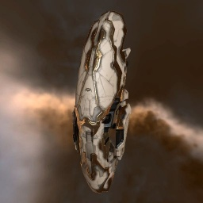

Oracle

Тип корабля: Линейный крейсер
Государство/Организация: Amarr
Примерная стоимость: 65.500.000 ISK
Описание
В 113 году по юлайскому летоисчислению императрица Джамиль Сарум Первая потребовала от инженеров Амаррской Империи создать новый линейный крейсер, который смог бы сдвинуть Войну Эмпирей с мёртвой точки.. Отойдя от доктрины грубой силы и тяжёлого бронирования, инженеры корпорации «Визиам» черпали вдохновение из истории Государства Калдари.
Во время галентско-калдарской войны инженеры Государства разработали лёгкие и маневренные корабли, способные противостоять неповоротливым увальням Галлентской Федерации. Этот подход, подкреплённый использованием новейших силовых установок и брони из сверхлегких сплавов, открыл путь к созданию «Оракула».
Амаррская Империя немедленно отправила проект в производство. Императрица выразила личную благодарность главному исследователю «Визиам» Паруду Вакирокки, назвав корабль «Божьей благодатью для Империи и карой небесной для ее врагов».
Характеристики
Корпус
Запас прочности корпуса: 1.980 ед.
Вместимость грузового отсека: 500 м^3
Объем отсека для дронов: -
Пропускная способность канала телеуправления: -
Масса: 14.760.000 кг
Занимает объем: 234.000,0 м^3 (15.000,0 м^3 в разобранном виде)
Влияние инертности конструкции: 0,495x
Сопротивление корпуса ЭМ-урону: 33 %
Сопротивление корпуса термальному урону: 33 %
Сопротивление корпуса кинетическому урону: 33 %
Сопротивление корпуса фугасному урону: 33 %
Броня
Запас прочности брони: 2.160 ед.
Сопротивление брони ЭМ-урону: 50 %
Сопротивление брони термальному урону: 35 %
Сопротивление брони кинетическому урону: 25 %
Сопротивление брони фугасному урону: 20 %
Щит
Запас прочности щита: 1.575 ед.
Влияние на время регенерации щитов: 23 минут и 20 секунд
Сопротивление щита ЭМ-урону: 0 %
Сопротивление щита термальному урону: 20 %
Сопротивление щита кинетическому урону: 40 %
Сопротивление щита фугасному урону: 50 %
Сопротивление средствам РЭП
Сопротивление накопителя нейтрализирующему воздействию: 0 %
Сопротивление воздействию генератору стазис-поля: 0 %
Сопротивление воздействию помех на наводку вооружения: 0 %
Накопитель энергии
Емкость накопителя: 3.500,0 ГДж
Время востановления заряда: 14 минут и 35 секунд
Целеуказания
Максимальная дальность захвата цели: 65 км
Максимальное количество захваченных целей: 6
Радиус сигнатуры: 210 м
Разрешающая способность систем захвата цели: 220 мм
Эффективность радарной системы: 18 ед.
Эффективность магнитнометрической системы: -
Эффективность гравиметрической системы: -
Эффективность ладарной системы: -
Двигательная установка
Максимальная скорость: 200 м/с
Скорость в варп-режиме: 3,5 а.е./с.
Служба оснащения
Мощность ЦПУ: 345,0 Тф
Мощность реактора: 1.375 МВт
Калибровка: 400 ед.
Точки монтажа орудийных установок: 8
Точки монтажа пусковых установок: -
Разъемы большой мощности: 8
Разъемы средней мощности: 3
Разъемы малой мощности: 6
Разъемы под установку тюнинг-модулей: 3